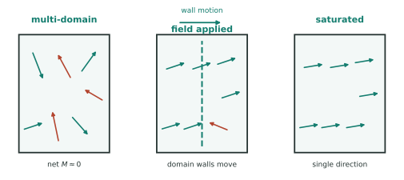
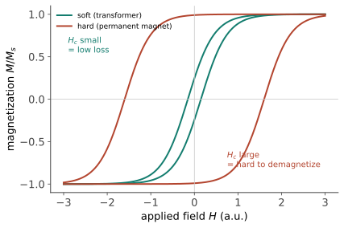

功能 II · 磁性与介电材料
电动机、变压器、硬盘、扬声器靠磁；电容、传感器、压电驱动、超声探头靠介电。两类材料的共同语言是畴——磁畴与电畴的翻转与钉扎，决定了"软"（易翻转、低损耗）与"硬"（难翻转、能记忆）两种截然相反的工程性格。
1. 磁性的来源与五种类型
磁矩来自电子自旋与轨道角动量。五分类（记前两条与铁磁三兄弟即可）：抗磁（所有物质都有的弱负响应）、顺磁（无序磁矩被外场轻微对齐）、铁磁（Fe、Co、Ni——交换作用使相邻自旋平行，自发磁化）、反铁磁（相邻反平行、净磁化为零）、亚铁磁（反平行但大小不等 ⇒ 有净磁化——铁氧体的家族）。
居里温度 \(T_C\)：热扰动战胜交换作用 ⇒ 铁磁消失（Fe 770 °C、Co 1121 °C、Ni 358 °C）——🔗 物理站相变章的经典二级相变范例。
磁畴：为降低退磁场能，自发磁化分成方向各异的畴（畴壁厚度 ~10–100 nm）；宏观磁化过程 = 畴壁移动 + 畴转动——这就是磁滞的舞台。

2. 软磁 vs 硬磁：同一条曲线的两端

| 软磁 | 硬磁（永磁） | |
|---|---|---|
| 目标 | \(H_c\) 尽量小、\(\mu\) 大、电阻大（抑涡流） | \(H_c\) 与 \((BH)_{max}\) 尽量大 |
| 微观策略 | 消除钉扎：高纯、无内应力、无晶界（非晶/纳米晶）、织构对齐 | 制造钉扎：单畴颗粒、高磁晶各向异性、析出相 |
| 材料 | 硅钢（取向硅钢的 \(\langle001\rangle\) 织构！结构 II）、坡莫合金、铁氧体、非晶带材（结构 IV） | Nd–Fe–B（当代最强，\((BH)_{max}\) ~400 kJ/m³）、SmCo（耐温好）、铁氧体（便宜） |
| 用途 | 变压器、电机铁芯、电感 | 电动车驱动电机、风机、硬盘、扬声器、耳机 |
主线回响：软磁要"没有缺陷"、硬磁要"全是缺陷"——同一个学科语言，两个相反的工程目标，这是"缺陷决定命运"最对称的一次演出。
产业现实：Nd–Fe–B 的高温性能靠添加镝/铽（重稀土，供应高度集中）——"少镝/无重稀土磁体"是长期研发热点；电机设计与材料选择在电动车上直接耦合（转子温度上限 ↔ 磁体牌号 ↔ 成本）。
磁记录一瞥：硬盘用垂直记录 + 高各向异性介质（记录密度 ↑ 需颗粒更小，但小到一定程度热扰动会擦除数据——超顺磁极限；HAMR 热辅助磁记录用局部加热临时降低矫顽力来突破它，是近年产业化的路线）。
3. 介电材料：从存电到发力
基础：极化机制（电子/离子/取向/界面）随频率依次"退场"——介电常数是频率的函数（高频用材料与工频完全不同）；损耗因子 \(\tan\delta\) 决定发热（微波炉正是利用水的取向极化在 2.45 GHz 的损耗）。
电容器材料：\(C = \varepsilon_0\varepsilon_r A/d\)——三条提升路径全部被工业用尽：高 \(\varepsilon_r\)（BaTiO₃ 系铁电陶瓷 \(\varepsilon_r\) 可达数千）、薄介质层、大面积（MLCC 多层陶瓷电容把上百层叠起来：一部手机上千颗，是电子工业用量最大的元件之一；材料上的挑战是层厚已进入亚微米、且需去 Pb 与稳定温度特性）。
铁电与压电（本页最有工程趣味的一段）：
- 铁电：自发极化且可被电场翻转（电畴——磁滞的电学镜像：\(P\)-\(E\) 回线）——FeRAM、可调介质；
- 压电：应力 ⇄ 电荷双向转换（PZT 是主力，\(d_{33}\) 高；石英稳定用于振荡器）——超声探头、喷墨打印头、压电马达、爆震传感器、声呐、手机里的振动马达与麦克风；
- 热释电：温度变化 ⇒ 电荷 ⇒ 红外热释电传感器（走廊里的人体感应灯就是它）。
三者是同一层级的对称性阶梯（压电 ⊃ 热释电 ⊃ 铁电）——晶体对称性直接决定能不能压电（无对称中心才可以）：结构 II 的几何在此第三次决定功能。无铅压电（PZT 含铅）是持续多年的研发方向，目前尚无全面替代者。
4. 数字感与反直觉
- \(\varepsilon_r\)：真空 1 ｜ 聚乙烯 2.3 ｜ SiO₂ 3.9 ｜ Al₂O₃ 9 ｜ BaTiO₃ 1000–5000；
- \((BH)_{max}\) (kJ/m³)：铁氧体 ~30 ｜ AlNiCo ~50 ｜ SmCo ~200 ｜ Nd–Fe–B ~400——四十年间永磁性能提升一个数量级，直接使电动车驱动电机小型化成为可能；
- 反直觉：变压器铁芯要叠片不是为了机械，是为了切断涡流回路（损耗 ∝ 片厚²）；最好的软磁材料是非晶（无晶界钉扎——结构 IV 的性能兑现）；压电材料把"不对称"卖成了功能——对称性缺失本身就是一种可用的缺陷。
【研】对标 Coey《Magnetism and Magnetic Materials》、Jaffe《Piezoelectric Ceramics》；交换作用的量子起源、磁各向异性能、Landau 铁电理论（🔗 物理站相变）是研究生纵深。
下一页功能线收官：热与光——从涡轮叶片的隔热涂层到透明的条件、从热电转换到光纤的 0.2 dB/km。